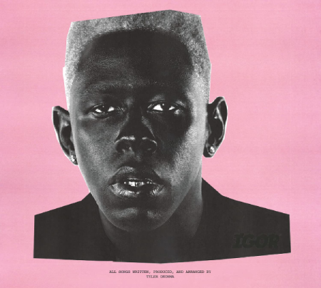
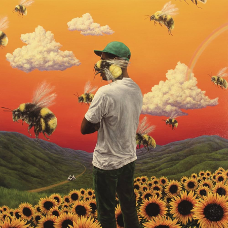
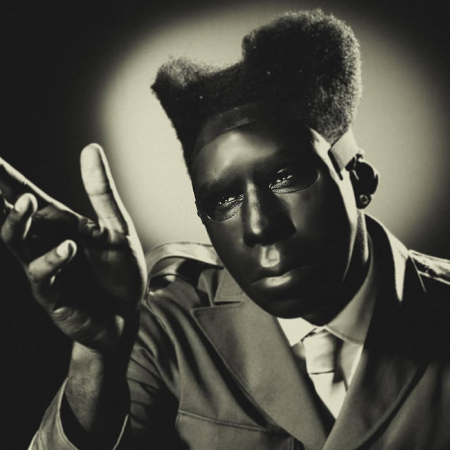

IGOR (2019) é o quinto álbum de estúdio do artista americano Tyler, The Creator...

Lançado em 2017, Flower Boy é frequentemente citado como o 'divisor de águas'...

Se Flower Boy foi a abertura de Tyler para o mundo... CHROMAKOPIA é o álbum da maturidade forçada.
